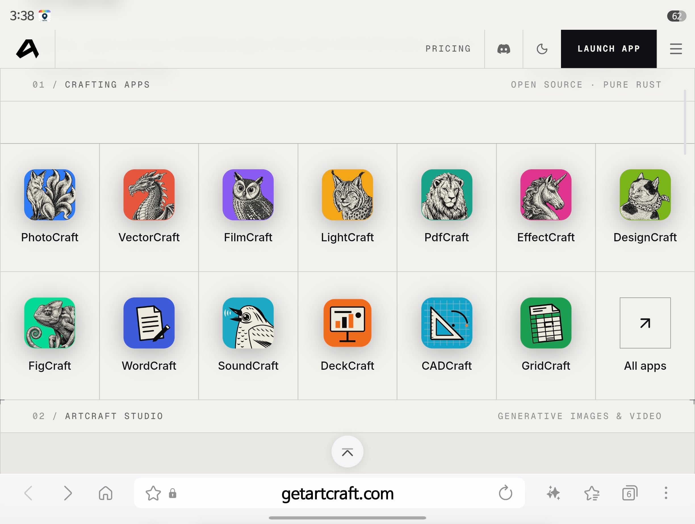

구독 요금제에 진절머리난 개발자가 만든
수상하게 어도비를 닮은 무료 툴.
AI를 통한 역설계로
구조분석자 따로, 코딩맨 따로둬서
기능은 똑같으나 코드는 달라 저작권을 일단 피해가는 묘수.

구독 요금제에 진절머리난 개발자가 만든
수상하게 어도비를 닮은 무료 툴.
AI를 통한 역설계로
구조분석자 따로, 코딩맨 따로둬서
기능은 똑같으나 코드는 달라 저작권을 일단 피해가는 묘수.
어도비는 free에요
도비는 무료로 해줍니다
며칠 핫했는데 쓸만한거 못된다로 결론남
재재이야~
Rust같은걸로 메모리최적화 ㅈㄴ하면 금방 폼 올라올거같긴함
최적화의 문제가 아니라 지금은 기능 자체가 동작을 안하는게 너무많아서 쓸만한게 못된다였는데
뭐 이것도 만드는곳에서 유지보수 의지가 있다면 빨리 올라오긴 하겟지만
이미 러스트로 웹어셈블리조져놓은거야
캐드랑 퓨전 대체용으로
Cadcraft랑 Solidcraft도 기대 중..
이제껏 짭도비, 짭소365 출시된 전례가 수없이 많았어도 살아남았지
해자가 그만큼 강례하단 소리
여러 기능이 빠진 상태다보니 별로라는 평이 많음
딱 단순한 그 기능만 필요하다 하면 쓸만함 나도 프리미어 짧게 쓰는데 써보고 바로 해지함
저거 ai 생성도 됨?
그럴리가
사소한 찐빠 없이 잘 작동 됨? 이 궁금햇는데 댓글보니 …
딴건 모르겠고 프리미어는 아직 쓸 물건은 아니라고 하더라.
전반적으로 처리 속도도 느리다고.
물론 꾸준히 업뎃 하면 쓸만해 지겠지만. 꾸준히 피드백 받아서 개선 될 지도 의문이고.
용량 큰 영상파일 원본 넣었는데 넣어지는데 한 30초에서 1분정도 넘게 걸리고
타임라인에 넣고 컷 짜르는데 반응 개 늦게 먹음 ㅋㅋㅋㅋ
간단한 용량 영상들 컷 편집 할때 빼곤 아직 구데기 그자체임
겉은 그럴싸한데 막상 써보려면 한글 인식 안됨, 뭐만 하면 튕김 등등 자잘한 버그 엄청 많음
렉카새기 써봤으면 이거 안퍼왔을텐데
무료 + 지속 개발 + AI연결 이거만 보는중
내년엔 좋아질거야 마인드
물론 지금 어도비 쓰는 분들은 신경안쓰셔도 될듯
이런 툴들이 무료로 풀려봐야 AI가 다 만들어주는 판국에 무슨 의미가 있겠나 싶다.. 개발자들이랑 디자이너들 싹다 갈려나가는 판국에 말이지
돈을 안받으면 지속개발이 가능하냐고 ㅋㅋ
돈 받으면 어도비 쓰는게 좋지
에펙쪽은 서드파티 없으면 업무효율 겁나 떨어져서 좀 애매하긴 해
오픈소스로 풀어버린게 관심있음 같이 유지보수해서 AI관련 커리어 만들자 그런거 아닐까
어도비는 수백명 직원이 놀기만하겠냐 절대 2인이서 저거 다 못다룸
slopslopslop
Pdf는 ocr이랑 일부 편집 제외하면 어도비꺼 대체가능 수준까지 올라왓음 사소한 버그는 잇지만 무게가 수마트라급으로 가벼운데 간단한 편집은 다 가능해서 잘쓰는중
어도비 게섯거라 시즌 3947362920 번 째
이름 진짜 잘 지었다 ㅋㅋㅋ 문제는 포토샵 단축키가 손에 박혀서 먼 옮기는 거
나는 간단하게만 영상만드는편이라 코덱스로 필요기능 개인적으로 넣으면 어도비 해제계획
근데 지금은 그냥 컷 자르는 수준 밖에 안되서 한 4~6개월정도 지나야 쓸만해지겠더라
대충 ai딸깍한거라서 대부분찐빠났고 미구현임. 그냥 속빈깡통. 기능도같지않고 저거상태보니 역설계한적조차없음.. 왜냐면진짜로 디버깅해서 리버스엔지니어링 기능하나마다 일주일걸림 하나코드빼오는데.
저중에 포토크래프트는 잘쓰고 있음. 전문가들용으로는 부족할수 있겠지만 나같은 가끔쓰는 일반인 용으로는 그럭저럭
엑셀그리드는 약간 아쉽더라.
개인적으로는 어도비쓰는 이유가 어도비 폰트쓰면 저작권신경안써도되니까 쓰긴함
괜히 나중에 폰트사용권 시비걸리면 골치아파지니까
써봤는데 그 툴로 현업 하는 사람은 못쓸 정도
그냥 일반인이 찍먹으로는 쓸만함
역설계는 어떻게 하는거임?
진짜ㅛ코드레벨로 동일하겨 하는그 아니라면 ui별 기능들 명시하고, 어떻게 동작하는지 다 스펙 정의하고, 그거 기준으로 짜게 하겠지.
그거 아니고 진짜 리버싱 말하는거라면, 실행파일 > 어셈블리로 전환해서 어셈블리 보고 실제 코드로 변환 하는거머
포토샵을 10년째 쓰고있는데 포토샵 기능들이 어떤 수식? 매커니즘?으로 구현되는 것 까지 완벽하게 복제가 되는건가? 다운 받아보니 용량이 110mb 밖에 안되던데 어떻게 한건지 ㅋㅋㅋ
그것들을 구현해야지ㅋㅋㅋㅋㅋㅋ 기능 오지그 많으니.. 어려운거지마는
아이콘이 다 오렐리 동물책 스타일이네
그냥 진짜 어쩌다가 몇몇 특정 기능만 필요한 경우에 쓸만할듯..
근데 저기 사이트 들어가보니까 사용량 요금제 그런거 써있던데..
이상하게 ai 역설계에 통쾌했어요 시전 하는 사람들 많더라...
상용제품군이 좆으로 보였나...?
도비는 자유에요!